<section class="section" style="border-bottom:none;">
	<div class="container">
		<div class="section-head">
			<span class="eyebrow">Reading Contest 2019</span>
			<h2>第10回日本語朗読コンテスト</h2>
			<p>2019/10/19（土）</p>
		</div>

		<div class="page-prose">
			<h3>獲獎名單</h3>
			<p>
				<strong>優勝</strong>　黃心妮（國立台南藝術大學音樂系）｜評審　太田豊 先生（台灣信越半導體股份有限公司）<br>
				<strong>準優勝</strong>　汪佩萱（文藻外語大學日文系）｜評審　松村裕之 先生（住電國際電子材料股份有限公司）<br>
				<strong>第三名</strong>　蔡浥平（政治大學日文系）｜評審　江頭希 先生（台灣國際住商電子股份有限公司）<br>
				<strong>佳作</strong>　王謙祐（復興國中）、張瑀潔（清華大學藝術與設計學系）、吳睿鈞（六和高中日文組）、許立萱（雲林科技大學前瞻系）、張鏵云（政治大學日文系）｜評審　刈宿邦俊 先生（台灣普利司通股份有限公司）
			</p>
			<p>
				<strong>第一會場 特別賞</strong>　蘇柏云（交通大學工工系）、王文愛（六和高中日文組）｜評審　藤賴宏 先生（台灣旭硝子電子股份有限公司）<br>
				<strong>第二會場 特別賞</strong>　鍾旻珈（員林高中）、羅規傑（惠文高中）｜評審　岩川裕 先生（台灣迪恩士半導體科技股份有限公司）<br>
				<strong>第三會場 特別賞</strong>　許湘琴（中國文化大學日文系）｜評審　伊藤裕子 先生（保聖那管理顧問股份有限公司）<br>
				<strong>第四會場 特別賞</strong>　陳彥安（交通大學管科系）、林哲宇（交通大學資工系）｜評審　大川原啓玄 先生（日商葵資訊系統股份有限公司）<br>
				<strong>第五會場 特別賞</strong>　游琳諭（高雄餐旅大學日文系）、許雅貞（交通大學管科系）｜評審　稻葉努 先生（力晶科技股份有限公司）<br>
				<strong>外交部獎</strong>　許皓婷（大葉大學日文系）、何亭臻（致理科技大學）、彭崧舫（國立交通大學電工系）｜評審　山本幸男 先生（公益財團法人日本漢字能力檢定協會）
			</p>

			<h3>比賽時間</h3>
			<p>11:00 報到｜12:00 開幕典禮｜12:30 預賽｜14:10 預賽成績發表｜14:20 決賽｜16:00 頒獎＆閉幕典禮</p>

			<h3>ごあいさつ</h3>
			<p>本コンテストは、おかげさまで第10回を迎えることができました。これまで多くの方にご支援、ご協力をいただきました。参加者も台湾全土から140名の方に来ていただけるようになりました。この場をお借りして、お礼申し上げます。<br>
			今年度のテーマは「応援」です。東京オリンピックはいよいよ来年になりました。そこで、予選課題はオリンピックの応援ソング4篇を選びました。そして、決勝は文学作品から2篇を課題としました。日々、暮らしの中で心が折れそうになるときは誰にでもあります。そんな時にぴったりな作品です。誰かのために、或いは自分のために、朗読してみませんか？<br>
			これまでと同様、参加者それぞれの感性でのパフォーマンスを披露していただけることを、心待ちにしています。10月19日、みなさまにお目にかかれるのを楽しみにしています。<br>
			國立交通大學　上條純恵</p>

			<p>
				<a class="btn btn-accent" href="assets/docs/10回交通大學日本語朗読コンテスト予選課題_2.doc">予選課題</a>
				<a class="btn btn-accent" href="assets/docs/10回交通大學日本語朗読コンテスト決勝課題__1__2.doc">決勝課題</a>
			</p>
		</div>

		<div class="gallery">
			<a class="gallery-item" href="assets/img/uploads/roudoku-poster-white4_1.jpg"></a>
			<a class="gallery-item" href="assets/img/uploads/dsc03936_1.jpg">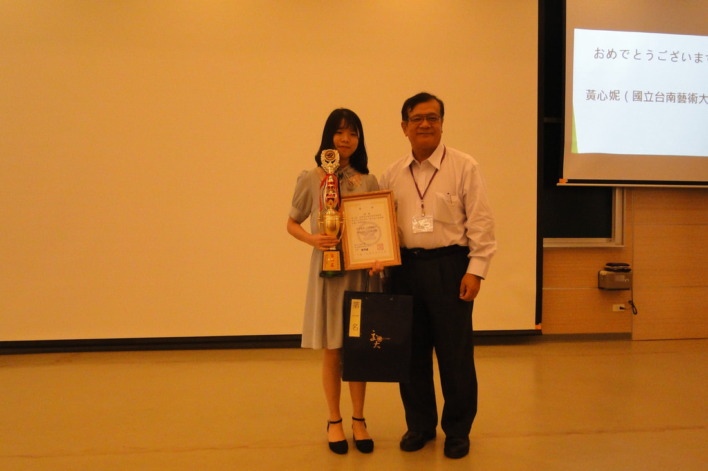</a>
			<a class="gallery-item" href="assets/img/uploads/dsc03917_1.jpg">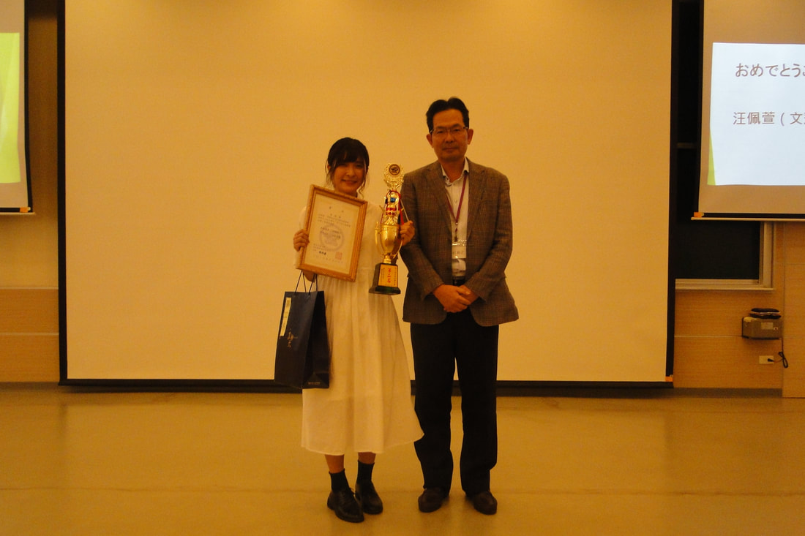</a>
			<a class="gallery-item" href="assets/img/uploads/dsc03906_1.jpg">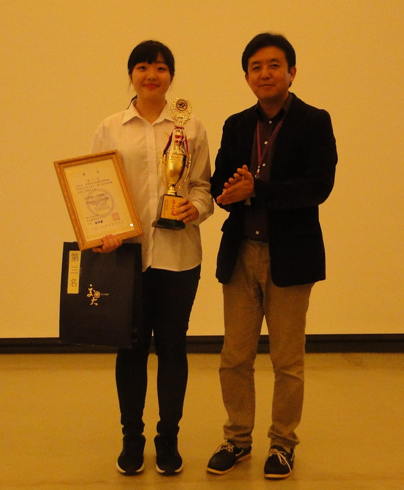</a>
			<a class="gallery-item" href="assets/img/uploads/dsc03899_1.jpg">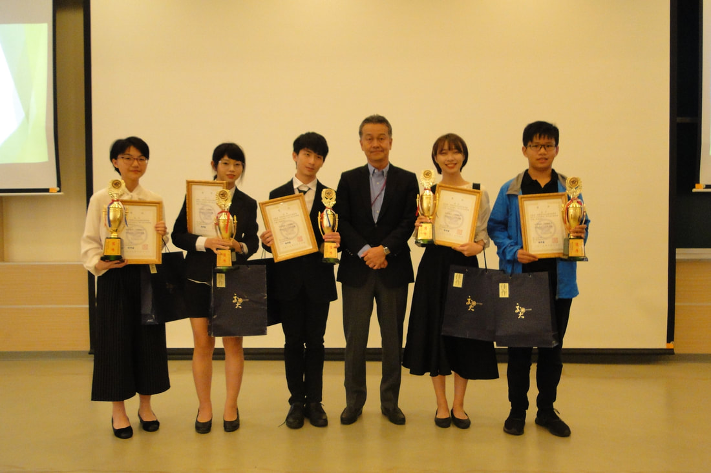</a>
			<a class="gallery-item" href="assets/img/uploads/dsc03837_1.jpg">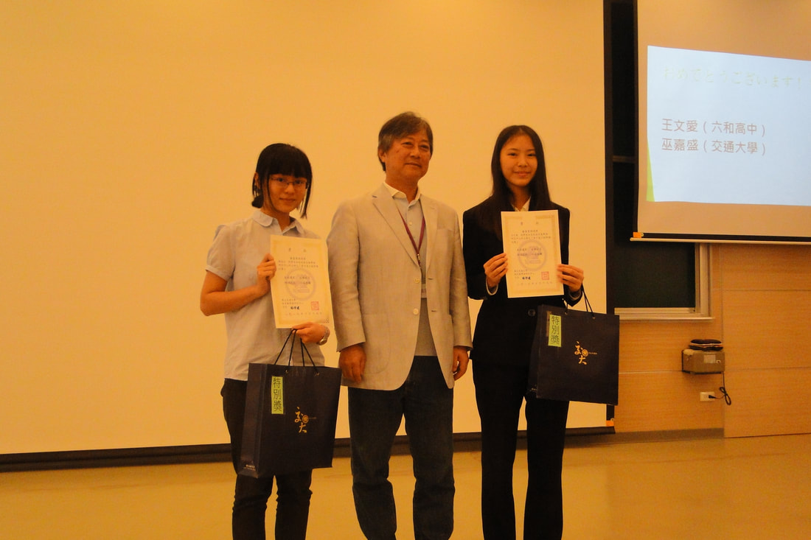</a>
			<a class="gallery-item" href="assets/img/uploads/dsc03846_1.jpg">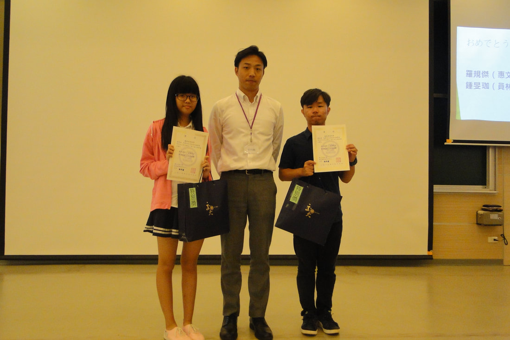</a>
			<a class="gallery-item" href="assets/img/uploads/dsc03857_1.jpg">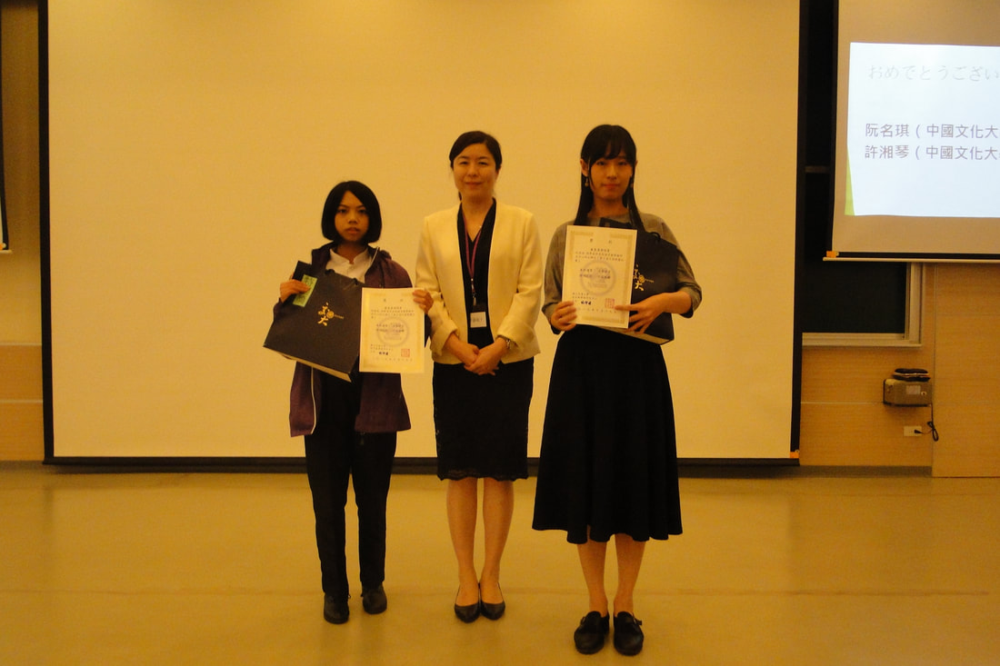</a>
			<a class="gallery-item" href="assets/img/uploads/dsc03861_1.jpg">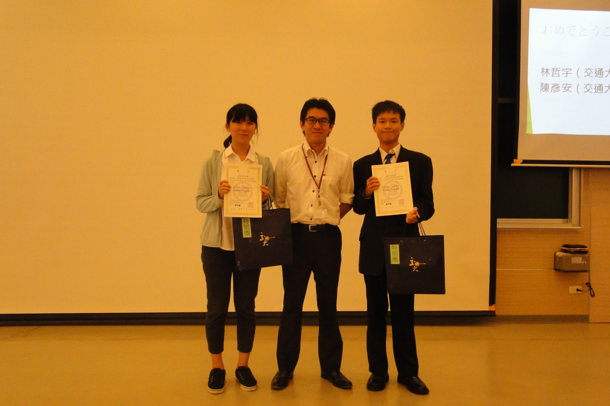</a>
			<a class="gallery-item" href="assets/img/uploads/dsc03870_1.jpg">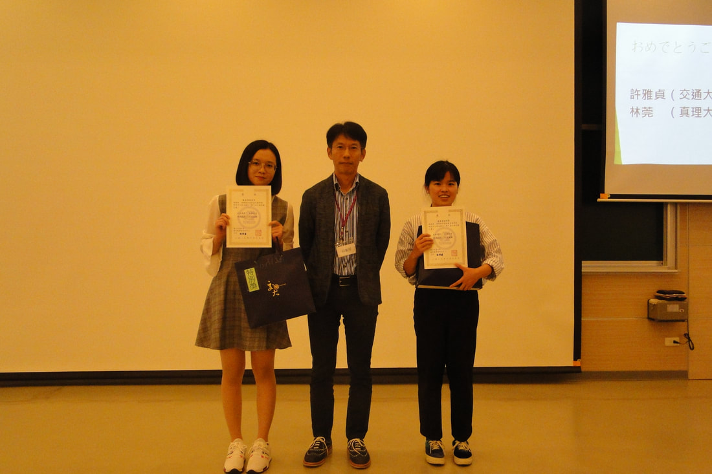</a>
			<a class="gallery-item" href="assets/img/uploads/dsc03885_1.jpg">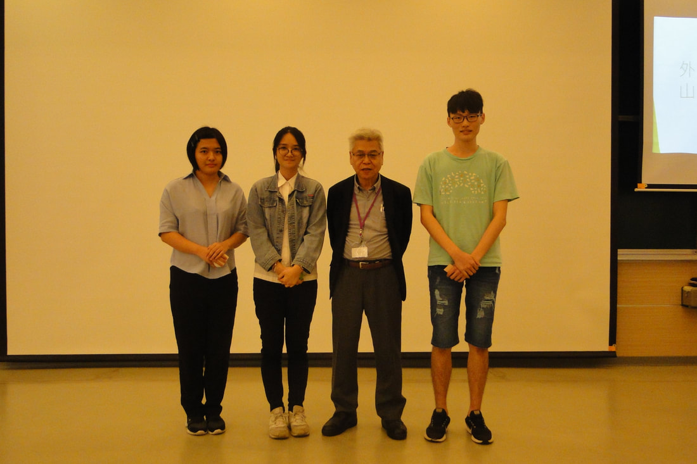</a>
			<a class="gallery-item" href="assets/img/uploads/dsc01549_1_orig.jpg">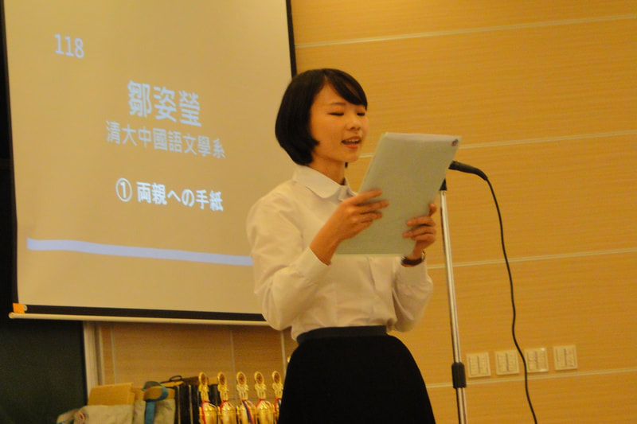</a>
			<a class="gallery-item" href="assets/img/uploads/dscn0713_1_orig.jpg">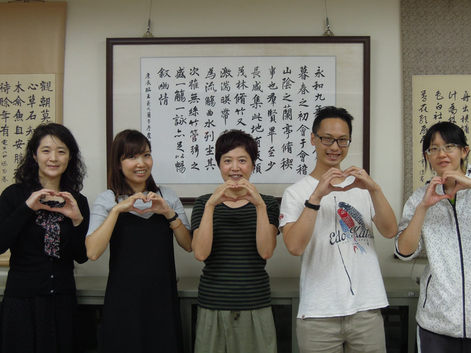</a>
			<a class="gallery-item" href="assets/img/uploads/dscn9824_1_orig.jpg">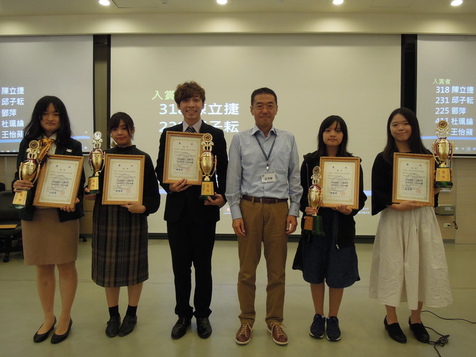</a>
			<a class="gallery-item" href="assets/img/uploads/dscn9703_1_orig.jpg"></a>
			<a class="gallery-item" href="assets/img/uploads/dsc01500_1_orig.jpg"></a>
			<a class="gallery-item" href="assets/img/uploads/dscn9867_1_orig.jpg"></a>
		</div>
	</div>
</section>
